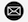

About Me:
Enthusiastic and self-motivated individual educated in the field of Business Management, I am a student currently doing an Msc in Digital Marketing and Channel Management who is currently looking for a professional training / placement year in an organization with the purpose of learning different Marketing Techniques , gaining work experience and working to the best of my capabilities. I have been known as an energetic, responsible & action oriented with great interpersonal and management skills who is ready to put my all.
Education:
Skills:
00447543736750 |
|
|  | ha00676@surrey.ac.uk |
| linkedin url |